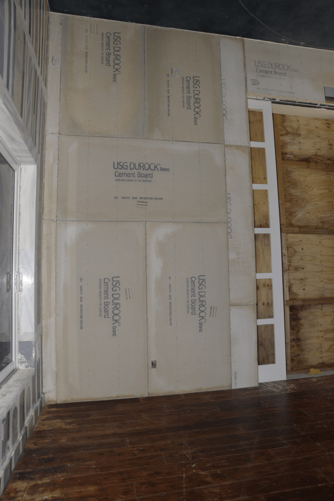

Módulo 01 — Variables y Tipos
Variables

Una variable es un nombre que apunta a un valor en memoria. En Python no se declara el tipo:
nombre = "Ana" # str
edad = 30 # int
altura = 1.65 # float
activo = True # boolReglas para nombres
- Pueden contener letras, dígitos y
_(no empezar con dígito) - Case-sensitive:
Edad ≠ edad - No usar palabras reservadas (
if,for,class,lambda, etc.) - Convención:
snake_casepara variables y funciones,PascalCasepara clases,UPPER_CASEpara constantes
Tipos primitivos
| Tipo | Ejemplo | Nota |
|---|---|---|
int | 42, -7, 0 | Precisión arbitraria — no overflow |
float | 3.14, -0.5, 2e10 | Doble precisión IEEE 754 |
bool | True, False | Subclase de int (True == 1) |
str | "hola", 'a' | Cadenas inmutables Unicode |
NoneType | None | Ausencia de valor |
complex | 2+3j | Números complejos |
bytes | b"abc" | Secuencia inmutable de bytes |
Verificar tipos
type(42) # <class 'int'>
isinstance(42, int) # True (preferible para chequeos)Conversión (casting)
int("42") # 42
float("3.14") # 3.14
str(100) # "100"
bool(0) # False
bool("") # False
bool("hola") # True
list("abc") # ['a', 'b', 'c']Falsy values en Python
0, 0.0, "", None, [], {}, (), set(), False evalúan a False. Todo lo demás es True.
Strings (cadenas)
saludo = "Hola"
saludo = 'Hola' # comillas simples o dobles, equivalentes
multilinea = """Línea 1
Línea 2"""Operaciones comunes
"hola" + " " + "mundo" # 'hola mundo' (concatenación)
"abc" * 3 # 'abcabcabc' (repetición)
len("python") # 6
"PYTHON".lower() # 'python'
"hola mundo".split() # ['hola', 'mundo']
"a,b,c".split(",") # ['a', 'b', 'c']
",".join(["a","b","c"]) # 'a,b,c'
" hola ".strip() # 'hola'
"hola".replace("o", "0") # 'h0la'
"hola"[0] # 'h' (indexing)
"hola"[1:3] # 'ol' (slicing)
"hola"[::-1] # 'aloh' (reversa)F-strings (formato moderno, Python 3.6+)
nombre = "Ana"
edad = 30
print(f"{nombre} tiene {edad} años")
print(f"{edad * 2 = }") # debugging: 'edad * 2 = 60'
print(f"{3.14159:.2f}") # '3.14'
print(f"{1000000:,}") # '1,000,000'Números
x = 10
y = 3
x / y # 3.333... (división real, devuelve float)
x // y # 3 (división entera)
x % y # 1 (módulo)
x ** y # 1000 (exponenciación)
divmod(x, y) # (3, 1)
abs(-5) # 5
round(3.7) # 4
round(3.14159, 2) # 3.14Notación
1_000_000 # legible: 1000000
0xFF # hex: 255
0b1010 # binario: 10
0o17 # octal: 15
2.5e3 # científica: 2500.0Constantes
Python no tiene constantes reales. Por convención se usan mayúsculas:
PI = 3.14159
MAX_RETRIES = 5
DATABASE_URL = "postgres://..."Tipado opcional (type hints)
Python 3.5+ permite anotar tipos. No se enforce en runtime, pero ayuda a IDEs y linters:
def saludar(nombre: str, edad: int) -> str:
return f"Hola {nombre}, tenés {edad} años"
valor: float = 3.14Ejercicios
- Crear variables con tu nombre, edad y estatura, e imprimirlas con f-string
- Pedir dos números al usuario con
input()y mostrar su suma, resta, multiplicación y división - Convertir la cadena
"1,2,3,4,5"en una lista de enteros - Calcular el porcentaje de una propina del 15% sobre $1500
- Escribir una cadena tuya y mostrarla al revés (
[::-1])